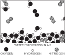
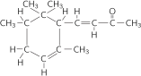

1. Atoms in Motion
| Science: |
| We are not concerned with where a new idea comes from – the sole test of its validity is experiment. |
| Atoms: |
| Things are made of myriads of particles about 10^{-8} cm in diameter. |
| They are in perpetual motion, the faster the hotter. |
| They stick together in complicated patterns. |
| They resist being pushed too close together. |
1–1 Introduction#
This two-year course in physics is presented from the point of view that you, the reader, are going to be a physicist. This is not necessarily the case of course, but that is what every professor in every subject assumes! If you are going to be a physicist, you will have a lot to study: two hundred years of the most rapidly developing field of knowledge that there is. So much knowledge, in fact, that you might think that you cannot learn all of it in four years, and truly you cannot; you will have to go to graduate school too!
Surprisingly enough, in spite of the tremendous amount of work that has been done for all this time it is possible to condense the enormous mass of results to a large extent—that is, to find laws which summarize all our knowledge. Even so, the laws are so hard to grasp that it is unfair to you to start exploring this tremendous subject without some kind of map or outline of the relationship of one part of the subject of science to another. Following these preliminary remarks, the first three chapters will therefore outline the relation of physics to the rest of the sciences, the relations of the sciences to each other, and the meaning of science, to help us develop a “feel” for the subject.
You might ask why we cannot teach physics by just giving the basic laws on page one and then showing how they work in all possible circumstances, as we do in Euclidean geometry, where we state the axioms and then make all sorts of deductions. (So, not satisfied to learn physics in four years, you want to learn it in four minutes?) We cannot do it in this way for two reasons. First, we do not yet know all the basic laws: there is an expanding frontier of ignorance. Second, the correct statement of the laws of physics involves some very unfamiliar ideas which require advanced mathematics for their description. Therefore, one needs a considerable amount of preparatory training even to learn what the words mean. No, it is not possible to do it that way. We can only do it piece by piece.
Each piece, or part, of the whole of nature is always merely an approximation to the complete truth, or the complete truth so far as we know it. In fact, everything we know is only some kind of approximation, because we know that we do not know all the laws as yet. Therefore, things must be learned only to be unlearned again or, more likely, to be corrected.
The principle of science, the definition, almost, is the following: The test of all knowledge is experiment. Experiment is the sole judge of scientific “truth.” But what is the source of knowledge? Where do the laws that are to be tested come from? Experiment, itself, helps to produce these laws, in the sense that it gives us hints. But also needed is imagination to create from these hints the great generalizations—to guess at the wonderful, simple, but very strange patterns beneath them all, and then to experiment to check again whether we have made the right guess. This imagining process is so difficult that there is a division of labor in physics: there are theoretical physicists who imagine, deduce, and guess at new laws, but do not experiment; and then there are experimental physicists who experiment, imagine, deduce, and guess.
We said that the laws of nature are approximate: that we first find the “wrong” ones, and then we find the “right” ones. Now, how can an experiment be “wrong”? First, in a trivial way: if something is wrong with the apparatus that you did not notice. But these things are easily fixed, and checked back and forth. So without snatching at such minor things, how can the results of an experiment be wrong? Only by being inaccurate. For example, the mass of an object never seems to change: a spinning top has the same weight as a still one. So a “law” was invented: mass is constant, independent of speed. That “law” is now found to be incorrect. Mass is found to increase with velocity, but appreciable increases require velocities near that of light. A true law is: if an object moves with a speed of less than one hundred miles a second the mass is constant to within one part in a million. In some such approximate form this is a correct law. So in practice one might think that the new law makes no significant difference. Well, yes and no. For ordinary speeds we can certainly forget it and use the simple constant-mass law as a good approximation. But for high speeds we are wrong, and the higher the speed, the more wrong we are.
Finally, and most interesting, philosophically we are completely wrong with the approximate law. Our entire picture of the world has to be altered even though the mass changes only by a little bit. This is a very peculiar thing about the philosophy, or the ideas, behind the laws. Even a very small effect sometimes requires profound changes in our ideas.
Now, what should we teach first? Should we teach the correct but unfamiliar law with its strange and difficult conceptual ideas, for example the theory of relativity, four-dimensional space-time, and so on? Or should we first teach the simple “constant-mass” law, which is only approximate, but does not involve such difficult ideas? The first is more exciting, more wonderful, and more fun, but the second is easier to get at first, and is a first step to a real understanding of the first idea. This point arises again and again in teaching physics. At different times we shall have to resolve it in different ways, but at each stage it is worth learning what is now known, how accurate it is, how it fits into everything else, and how it may be changed when we learn more.
Let us now proceed with our outline, or general map, of our understanding of science today (in particular, physics, but also of other sciences on the periphery), so that when we later concentrate on some particular point we will have some idea of the background, why that particular point is interesting, and how it fits into the big structure. So, what is our overall picture of the world?
1–2 Matter is made of atoms#
If, in some cataclysm, all of scientific knowledge were to be destroyed, and only one sentence passed on to the next generations of creatures, what statement would contain the most information in the fewest words? I believe it is the atomic hypothesis (or the atomic fact, or whatever you wish to call it) that all things are made of atoms—little particles that move around in perpetual motion, attracting each other when they are a little distance apart, but repelling upon being squeezed into one another. In that one sentence, you will see, there is an enormous amount of information about the world, if just a little imagination and thinking are applied.

To illustrate the power of the atomic idea, suppose that we have a drop of water a quarter of an inch on the side. If we look at it very closely we see nothing but water—smooth, continuous water. Even if we magnify it with the best optical microscope available—roughly two thousand times—then the water drop will be roughly forty feet across, about as big as a large room, and if we looked rather closely, we would still see relatively smooth water—but here and there small football-shaped things swimming back and forth. Very interesting. These are paramecia. You may stop at this point and get so curious about the paramecia with their wiggling cilia and twisting bodies that you go no further, except perhaps to magnify the paramecia still more and see inside. This, of course, is a subject for biology, but for the present we pass on and look still more closely at the water material itself, magnifying it two thousand times again. Now the drop of water extends about fifteen miles across, and if we look very closely at it we see a kind of teeming, something which no longer has a smooth appearance—it looks something like a crowd at a football game as seen from a very great distance. In order to see what this teeming is about, we will magnify it another two hundred and fifty times and we will see something similar to what is shown in Fig. 1–1. This is a picture of water magnified a billion times, but idealized in several ways. In the first place, the particles are drawn in a simple manner with sharp edges, which is inaccurate. Secondly, for simplicity, they are sketched almost schematically in a two-dimensional arrangement, but of course they are moving around in three dimensions. Notice that there are two kinds of “blobs” or circles to represent the atoms of oxygen (black) and hydrogen (white), and that each oxygen has two hydrogens tied to it. (Each little group of an oxygen with its two hydrogens is called a molecule.) The picture is idealized further in that the real particles in nature are continually jiggling and bouncing, turning and twisting around one another. You will have to imagine this as a dynamic rather than a static picture. Another thing that cannot be illustrated in a drawing is the fact that the particles are “stuck together”—that they attract each other, this one pulled by that one, etc. The whole group is “glued together,” so to speak. On the other hand, the particles do not squeeze through each other. If you try to squeeze two of them too close together, they repel.
The atoms are 1 or 2\times10^{-8} cm in radius. Now 10^{-8} cm is called an angstrom (just as another name), so we say they are 1 or 2 angstroms (Å) in radius. Another way to remember their size is this: if an apple is magnified to the size of the earth, then the atoms in the apple are approximately the size of the original apple.
Now imagine this great drop of water with all of these jiggling particles stuck together and tagging along with each other. The water keeps its volume; it does not fall apart, because of the attraction of the molecules for each other. If the drop is on a slope, where it can move from one place to another, the water will flow, but it does not just disappear—things do not just fly apart—because of the molecular attraction. Now the jiggling motion is what we represent as heat: when we increase the temperature, we increase the motion. If we heat the water, the jiggling increases and the volume between the atoms increases, and if the heating continues there comes a time when the pull between the molecules is not enough to hold them together and they do fly apart and become separated from one another. Of course, this is how we manufacture steam out of water—by increasing the temperature; the particles fly apart because of the increased motion.

In Fig. 1–2 we have a picture of steam. This picture of steam fails in one respect: at ordinary atmospheric pressure there certainly would not be as many as three water molecules in this figure. Most squares this size would contain none—but we accidentally have two and a half or three in the picture (just so it would not be completely blank). Now in the case of steam we see the characteristic molecules more clearly than in the case of water. For simplicity, the molecules are drawn so that there is a 120^\circ angle between the hydrogen atoms. In actual fact the angle is 105^\circ3', and the distance between the center of a hydrogen and the center of the oxygen is 0.957 Å, so we know this molecule very well.
Let us see what some of the properties of steam vapor or any other gas are. The molecules, being separated from one another, will bounce against the walls. Imagine a room with a number of tennis balls (a hundred or so) bouncing around in perpetual motion. When they bombard the wall, this pushes the wall away. (Of course we would have to push the wall back.) This means that the gas exerts a jittery force which our coarse senses (not being ourselves magnified a billion times) feel only as an average push. In order to confine a gas we must apply a pressure. Figure 1–3 shows a standard vessel for holding gases (used in all textbooks), a cylinder with a piston in it. Now, it makes no difference what the shapes of water molecules are, so for simplicity we shall draw them as tennis balls or little dots. These things are in perpetual motion in all directions. So many of them are hitting the top piston all the time that to keep it from being patiently knocked out of the tank by this continuous banging, we shall have to hold the piston down by a certain force, which we call the pressure (really, the pressure times the area is the force). Clearly, the force is proportional to the area, for if we increase the area but keep the number of molecules per cubic centimeter the same, we increase the number of collisions with the piston in the same proportion as the area was increased.
Now let us put twice as many molecules in this tank, so as to double the density, and let them have the same speed, i.e., the same temperature. Then, to a close approximation, the number of collisions will be doubled, and since each will be just as “energetic” as before, the pressure is proportional to the density. If we consider the true nature of the forces between the atoms, we would expect a slight decrease in pressure because of the attraction between the atoms, and a slight increase because of the finite volume they occupy. Nevertheless, to an excellent approximation, if the density is low enough that there are not many atoms, the pressure is proportional to the density.
We can also see something else: If we increase the temperature without changing the density of the gas, i.e., if we increase the speed of the atoms, what is going to happen to the pressure? Well, the atoms hit harder because they are moving faster, and in addition they hit more often, so the pressure increases. You see how simple the ideas of atomic theory are.
Let us consider another situation. Suppose that the piston moves inward, so that the atoms are slowly compressed into a smaller space. What happens when an atom hits the moving piston? Evidently it picks up speed from the collision. You can try it by bouncing a ping-pong ball from a forward-moving paddle, for example, and you will find that it comes off with more speed than that with which it struck. (Special example: if an atom happens to be standing still and the piston hits it, it will certainly move.) So the atoms are “hotter” when they come away from the piston than they were before they struck it. Therefore all the atoms which are in the vessel will have picked up speed. This means that when we compress a gas slowly, the temperature of the gas increases. So, under slow compression, a gas will increase in temperature, and under slow expansion it will decrease in temperature.

We now return to our drop of water and look in another direction. Suppose that we decrease the temperature of our drop of water. Suppose that the jiggling of the molecules of the atoms in the water is steadily decreasing. We know that there are forces of attraction between the atoms, so that after a while they will not be able to jiggle so well. What will happen at very low temperatures is indicated in Fig. 1–4: the molecules lock into a new pattern which is ice. This particular schematic diagram of ice is wrong because it is in two dimensions, but it is right qualitatively. The interesting point is that the material has a definite place for every atom, and you can easily appreciate that if somehow or other we were to hold all the atoms at one end of the drop in a certain arrangement, each atom in a certain place, then because of the structure of interconnections, which is rigid, the other end miles away (at our magnified scale) will have a definite location. So if we hold a needle of ice at one end, the other end resists our pushing it aside, unlike the case of water, in which the structure is broken down because of the increased jiggling so that the atoms all move around in different ways. The difference between solids and liquids is, then, that in a solid the atoms are arranged in some kind of an array, called a crystalline array, and they do not have a random position at long distances; the position of the atoms on one side of the crystal is determined by that of other atoms millions of atoms away on the other side of the crystal. Figure 1–4 is an invented arrangement for ice, and although it contains many of the correct features of ice, it is not the true arrangement. One of the correct features is that there is a part of the symmetry that is hexagonal. You can see that if we turn the picture around an axis by 60^\circ, the picture returns to itself. So there is a symmetry in the ice which accounts for the six-sided appearance of snowflakes. Another thing we can see from Fig. 1–4 is why ice shrinks when it melts. The particular crystal pattern of ice shown here has many “holes” in it, as does the true ice structure. When the organization breaks down, these holes can be occupied by molecules. Most simple substances, with the exception of water and type metal, expand upon melting, because the atoms are closely packed in the solid crystal and upon melting need more room to jiggle around, but an open structure collapses, as in the case of water.
Now although ice has a “rigid” crystalline form, its temperature can change—ice has heat. If we wish, we can change the amount of heat. What is the heat in the case of ice? The atoms are not standing still. They are jiggling and vibrating. So even though there is a definite order to the crystal—a definite structure—all of the atoms are vibrating “in place.” As we increase the temperature, they vibrate with greater and greater amplitude, until they shake themselves out of place. We call this melting. As we decrease the temperature, the vibration decreases and decreases until, at absolute zero, there is a minimum amount of vibration that the atoms can have, but not zero. This minimum amount of motion that atoms can have is not enough to melt a substance, with one exception: helium. Helium merely decreases the atomic motions as much as it can, but even at absolute zero there is still enough motion to keep it from freezing. Helium, even at absolute zero, does not freeze, unless the pressure is made so great as to make the atoms squash together. If we increase the pressure, we can make it solidify.
1–3 Atomic processes#

So much for the description of solids, liquids, and gases from the atomic point of view. However, the atomic hypothesis also describes processes, and so we shall now look at a number of processes from an atomic standpoint. The first process that we shall look at is associated with the surface of the water. What happens at the surface of the water? We shall now make the picture more complicated—and more realistic—by imagining that the surface is in air. Figure 1–5 shows the surface of water in air. We see the water molecules as before, forming a body of liquid water, but now we also see the surface of the water. Above the surface we find a number of things: First of all there are water molecules, as in steam. This is water vapor, which is always found above liquid water. (There is an equilibrium between the steam vapor and the water which will be described later.) In addition we find some other molecules—here two oxygen atoms stuck together by themselves, forming an oxygen molecule, there two nitrogen atoms also stuck together to make a nitrogen molecule. Air consists almost entirely of nitrogen, oxygen, some water vapor, and lesser amounts of carbon dioxide, argon, and other things. So above the water surface is the air, a gas, containing some water vapor. Now what is happening in this picture? The molecules in the water are always jiggling around. From time to time, one on the surface happens to be hit a little harder than usual, and gets knocked away. It is hard to see that happening in the picture because it is a still picture. But we can imagine that one molecule near the surface has just been hit and is flying out, or perhaps another one has been hit and is flying out. Thus, molecule by molecule, the water disappears—it evaporates. But if we close the vessel above, after a while we shall find a large number of molecules of water amongst the air molecules. From time to time, one of these vapor molecules comes flying down to the water and gets stuck again. So we see that what looks like a dead, uninteresting thing—a glass of water with a cover, that has been sitting there for perhaps twenty years—really contains a dynamic and interesting phenomenon which is going on all the time. To our eyes, our crude eyes, nothing is changing, but if we could see it a billion times magnified, we would see that from its own point of view it is always changing: molecules are leaving the surface, molecules are coming back.
Why do we see no change? Because just as many molecules are leaving as are coming back! In the long run “nothing happens.” If we then take the top of the vessel off and blow the moist air away, replacing it with dry air, then the number of molecules leaving is just the same as it was before, because this depends on the jiggling of the water, but the number coming back is greatly reduced because there are so many fewer water molecules above the water. Therefore there are more going out than coming in, and the water evaporates. Hence, if you wish to evaporate water turn on the fan!
Here is something else: Which molecules leave? When a molecule leaves it is due to an accidental, extra accumulation of a little bit more than ordinary energy, which it needs if it is to break away from the attractions of its neighbors. Therefore, since those that leave have more energy than the average, the ones that are left have less average motion than they had before. So the liquid gradually cools if it evaporates. Of course, when a molecule of vapor comes from the air to the water below there is a sudden great attraction as the molecule approaches the surface. This speeds up the incoming molecule and results in generation of heat. So when they leave they take away heat; when they come back they generate heat. Of course when there is no net evaporation the result is nothing—the water is not changing temperature. If we blow on the water so as to maintain a continuous preponderance in the number evaporating, then the water is cooled. Hence, blow on soup to cool it!
Of course you should realize that the processes just described are more complicated than we have indicated. Not only does the water go into the air, but also, from time to time, one of the oxygen or nitrogen molecules will come in and “get lost” in the mass of water molecules, and work its way into the water. Thus the air dissolves in the water; oxygen and nitrogen molecules will work their way into the water and the water will contain air. If we suddenly take the air away from the vessel, then the air molecules will leave more rapidly than they come in, and in doing so will make bubbles. This is very bad for divers, as you may know.


Now we go on to another process. In Fig. 1–6 we see, from an atomic point of view, a solid dissolving in water. If we put a crystal of salt in the water, what will happen? Salt is a solid, a crystal, an organized arrangement of “salt atoms.” Figure 1–7 is an illustration of the three-dimensional structure of common salt, sodium chloride. Strictly speaking, the crystal is not made of atoms, but of what we call ions. An ion is an atom which either has a few extra electrons or has lost a few electrons. In a salt crystal we find chlorine ions (chlorine atoms with an extra electron) and sodium ions (sodium atoms with one electron missing). The ions all stick together by electrical attraction in the solid salt, but when we put them in the water we find, because of the attractions of the negative oxygen and positive hydrogen for the ions, that some of the ions jiggle loose. In Fig. 1–6 we see a chlorine ion getting loose, and other atoms floating in the water in the form of ions. This picture was made with some care. Notice, for example, that the hydrogen ends of the water molecules are more likely to be near the chlorine ion, while near the sodium ion we are more likely to find the oxygen end, because the sodium is positive and the oxygen end of the water is negative, and they attract electrically. Can we tell from this picture whether the salt is dissolving in water or crystallizing out of water? Of course we cannot tell, because while some of the atoms are leaving the crystal other atoms are rejoining it. The process is a dynamic one, just as in the case of evaporation, and it depends on whether there is more or less salt in the water than the amount needed for equilibrium. By equilibrium we mean that situation in which the rate at which atoms are leaving just matches the rate at which they are coming back. If there is almost no salt in the water, more atoms leave than return, and the salt dissolves. If, on the other hand, there are too many “salt atoms,” more return than leave, and the salt is crystallizing.
In passing, we mention that the concept of a molecule of a substance is only approximate and exists only for a certain class of substances. It is clear in the case of water that the three atoms are actually stuck together. It is not so clear in the case of sodium chloride in the solid. There is just an arrangement of sodium and chlorine ions in a cubic pattern. There is no natural way to group them as “molecules of salt.”
Returning to our discussion of solution and precipitation, if we increase the temperature of the salt solution, then the rate at which atoms are taken away is increased, and so is the rate at which atoms are brought back. It turns out to be very difficult, in general, to predict which way it is going to go, whether more or less of the solid will dissolve. Most substances dissolve more, but some substances dissolve less, as the temperature increases.
1–4 Chemical reactions#
In all of the processes which have been described so far, the atoms and the ions have not changed partners, but of course there are circumstances in which the atoms do change combinations, forming new molecules. This is illustrated in Fig. 1–8. A process in which the rearrangement of the atomic partners occurs is what we call a chemical reaction. The other processes so far described are called physical processes, but there is no sharp distinction between the two. (Nature does not care what we call it, she just keeps on doing it.) This figure is supposed to represent carbon burning in oxygen. In the case of oxygen, two oxygen atoms stick together very strongly. (Why do not three or even four stick together? That is one of the very peculiar characteristics of such atomic processes. Atoms are very special: they like certain particular partners, certain particular directions, and so on. It is the job of physics to analyze why each one wants what it wants. At any rate, two oxygen atoms form, saturated and happy, a molecule.)

The carbon atoms are supposed to be in a solid crystal (which could be graphite or diamond 2). Now, for example, one of the oxygen molecules can come over to the carbon, and each atom can pick up a carbon atom and go flying off in a new combination—“carbon-oxygen”—which is a molecule of the gas called carbon monoxide. It is given the chemical name CO. It is very simple: the letters “CO” are practically a picture of that molecule. But carbon attracts oxygen much more than oxygen attracts oxygen or carbon attracts carbon. Therefore in this process the oxygen may arrive with only a little energy, but the oxygen and carbon will snap together with a tremendous vengeance and commotion, and everything near them will pick up the energy. A large amount of motion energy, kinetic energy, is thus generated. This of course is burning; we are getting heat from the combination of oxygen and carbon. The heat is ordinarily in the form of the molecular motion of the hot gas, but in certain circumstances it can be so enormous that it generates light. That is how one gets flames.
In addition, the carbon monoxide is not quite satisfied. It is possible for it to attach another oxygen, so that we might have a much more complicated reaction in which the oxygen is combining with the carbon, while at the same time there happens to be a collision with a carbon monoxide molecule. One oxygen atom could attach itself to the CO and ultimately form a molecule, composed of one carbon and two oxygens, which is designated CO _2 and called carbon dioxide. If we burn the carbon with very little oxygen in a very rapid reaction (for example, in an automobile engine, where the explosion is so fast that there is not time for it to make carbon dioxide) a considerable amount of carbon monoxide is formed. In many such rearrangements, a very large amount of energy is released, forming explosions, flames, etc., depending on the reactions. Chemists have studied these arrangements of the atoms, and found that every substance is some type of arrangement of atoms.
To illustrate this idea, let us consider another example. If we go into a field of small violets, we know what “that smell” is. It is some kind of molecule, or arrangement of atoms, that has worked its way into our noses. First of all, how did it work its way in? That is rather easy. If the smell is some kind of molecule in the air, jiggling around and being knocked every which way, it might have accidentally worked its way into the nose. Certainly it has no particular desire to get into our nose. It is merely one helpless part of a jostling crowd of molecules, and in its aimless wanderings this particular chunk of matter happens to find itself in the nose.

Now chemists can take special molecules like the odor of violets, and analyze them and tell us the exact arrangement of the atoms in space. We know that the carbon dioxide molecule is straight and symmetrical: O—C—O. (That can be determined easily, too, by physical methods.) However, even for the vastly more complicated arrangements of atoms that there are in chemistry, one can, by a long, remarkable process of detective work, find the arrangements of the atoms. Figure 1–9 is a picture of the air in the neighborhood of a violet; again we find nitrogen and oxygen in the air, and water vapor. (Why is there water vapor? Because the violet is wet. All plants transpire.) However, we also see a “monster” composed of carbon atoms, hydrogen atoms, and oxygen atoms, which have picked a certain particular pattern in which to be arranged. It is a much more complicated arrangement than that of carbon dioxide; in fact, it is an enormously complicated arrangement. Unfortunately, we cannot picture all that is really known about it chemically, because the precise arrangement of all the atoms is actually known in three dimensions, while our picture is in only two dimensions. The six carbons which form a ring do not form a flat ring, but a kind of “puckered” ring. All of the angles and distances are known. So a chemical formula is merely a picture of such a molecule. When the chemist writes such a thing on the blackboard, he is trying to “draw,” roughly speaking, in two dimensions. For example, we see a “ring” of six carbons, and a “chain” of carbons hanging on the end, with an oxygen second from the end, three hydrogens tied to that carbon, two carbons and three hydrogens sticking up here, etc.

How does the chemist find what the arrangement is? He mixes bottles full of stuff together, and if it turns red, it tells him that it consists of one hydrogen and two carbons tied on here; if it turns blue, on the other hand, that is not the way it is at all. This is one of the most fantastic pieces of detective work that has ever been done—organic chemistry. To discover the arrangement of the atoms in these enormously complicated arrays the chemist looks at what happens when he mixes two different substances together. The physicist could never quite believe that the chemist knew what he was talking about when he described the arrangement of the atoms. For about twenty years it has been possible, in some cases, to look at such molecules (not quite as complicated as this one, but some which contain parts of it) by a physical method, and it has been possible to locate every atom, not by looking at colors, but by measuring where they are. And lo and behold!, the chemists are almost always correct.
It turns out, in fact, that in the odor of violets there are three slightly different molecules, which differ only in the arrangement of the hydrogen atoms.
One problem of chemistry is to name a substance, so that we will know what it is. Find a name for this shape! Not only must the name tell the shape, but it must also tell that here is an oxygen atom, there a hydrogen—exactly what and where each atom is. So we can appreciate that the chemical names must be complex in order to be complete. You see that the name of this thing in the more complete form that will tell you the structure of it is 4-(2, 2, 3, 6 tetramethyl-5-cyclohexenyl)-3-buten-2-one, and that tells you that this is the arrangement. We can appreciate the difficulties that the chemists have, and also appreciate the reason for such long names. It is not that they wish to be obscure, but they have an extremely difficult problem in trying to describe the molecules in words!
How do we know that there are atoms? By one of the tricks mentioned earlier: we make the hypothesis that there are atoms, and one after the other results come out the way we predict, as they ought to if things are made of atoms. There is also somewhat more direct evidence, a good example of which is the following: The atoms are so small that you cannot see them with a light microscope—in fact, not even with an electron microscope. (With a light microscope you can only see things which are much bigger.) Now if the atoms are always in motion, say in water, and we put a big ball of something in the water, a ball much bigger than the atoms, the ball will jiggle around—much as in a push ball game, where a great big ball is pushed around by a lot of people. The people are pushing in various directions, and the ball moves around the field in an irregular fashion. So, in the same way, the “large ball” will move because of the inequalities of the collisions on one side to the other, from one moment to the next. Therefore, if we look at very tiny particles (colloids) in water through an excellent microscope, we see a perpetual jiggling of the particles, which is the result of the bombardment of the atoms. This is called the Brownian motion.
We can see further evidence for atoms in the structure of crystals. In many cases the structures deduced by x-ray analysis agree in their spatial “shapes” with the forms actually exhibited by crystals as they occur in nature. The angles between the various “faces” of a crystal agree, within seconds of arc, with angles deduced on the assumption that a crystal is made of many “layers” of atoms.
Everything is made of atoms. That is the key hypothesis. The most important hypothesis in all of biology, for example, is that everything that animals do, atoms do. In other words, there is nothing that living things do that cannot be understood from the point of view that they are made of atoms acting according to the laws of physics. This was not known from the beginning: it took some experimenting and theorizing to suggest this hypothesis, but now it is accepted, and it is the most useful theory for producing new ideas in the field of biology.
If a piece of steel or a piece of salt, consisting of atoms one next to the other, can have such interesting properties; if water—which is nothing but these little blobs, mile upon mile of the same thing over the earth—can form waves and foam, and make rushing noises and strange patterns as it runs over cement; if all of this, all the life of a stream of water, can be nothing but a pile of atoms, how much more is possible? If instead of arranging the atoms in some definite pattern, again and again repeated, on and on, or even forming little lumps of complexity like the odor of violets, we make an arrangement which is always different from place to place, with different kinds of atoms arranged in many ways, continually changing, not repeating, how much more marvelously is it possible that this thing might behave? Is it possible that that “thing” walking back and forth in front of you, talking to you, is a great glob of these atoms in a very complex arrangement, such that the sheer complexity of it staggers the imagination as to what it can do? When we say we are a pile of atoms, we do not mean we are merely a pile of atoms, because a pile of atoms which is not repeated from one to the other might well have the possibilities which you see before you in the mirror.